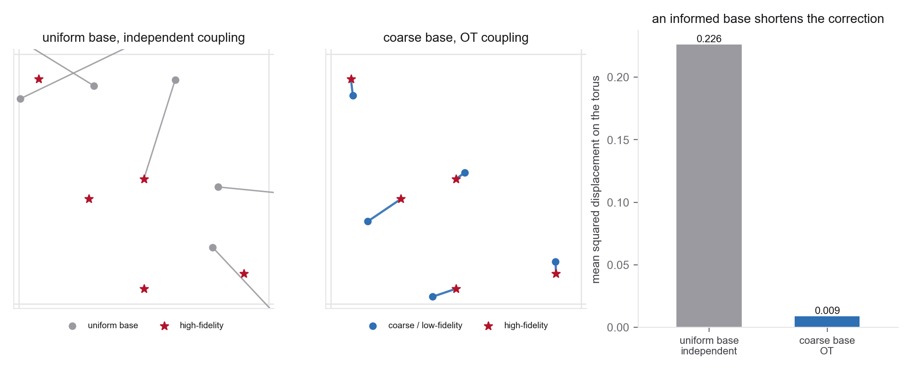

- Riemannian flow matching on the torus (Week 3 Problem 4)
- Data-dependent couplings and bridges (Week 4 Problem 4)
- Minibatch OT and the Sinkhorn primitive (Problems 2-3)
- The base \(\rho_0\) as a free choice; transport cost (Problem 1)
- The minimum-image (wrapped) distance on \([0,1)^d\)
- Albergo et al. (Data-Dependent Couplings), the coupling theory: §3 in the ICML version, §2 in the arXiv preprint
- GDB §4.1 for this lab's setup on real molecules: a coarse force-field geometry in, a DFT equilibrium structure out
- OMatG for task-specific bases, composition conditioning, and an optional atom-order coupling
- FlowMM §2.1, §3 for the torus representation and geometry
- Week 3 Problem 4 and Week 4 Problem 4 for the torus flow and the coupling code you extend
Scope. Coordinates only, on the flat torus \(\mathbb T^2=[0,1)^2\). Be precise about what a point of \(\mathbb T^2\) is here, because "a two-atom stand-in" would be wrong. Two atoms in a two-dimensional periodic cell live in \(\mathbb T^4\), and the absolute position of a single atom is physically meaningless under global translation. So take \[ u=(f_B-f_A)\bmod 1\in\mathbb T^2, \] the relative fractional coordinate of two distinguishable atoms \(A\) and \(B\) in a fixed unit-square cell, with \(A\) pinned at the origin to quotient out global translation. The modes of \(q\) are metastable relative arrangements of \(B\) around \(A\). Keep the atoms distinguishable; if they were identical you would inherit a further symmetry \(u\sim-u\), which this lab does not handle. A full crystal also carries lattice and species, deferred to Week 11. The task is a low-to-high-fidelity map: a coarse ensemble of relative positions (a cheap relaxation, an unrelaxed guess) is the base, and the high-fidelity relaxed ensemble is the target. The experiment asks whether that designed base lowers empirical transport cost and finite-model error; it does not assume the outcome.
Target and base. Both laws are analytic and separately sampleable, which matters, since "perturb each relaxed configuration" would leave it ambiguous whether the base is an independent low-fidelity ensemble, a corruption of individual target samples, or a paired dataset. Those are different statistical problems. Define wrapped mixtures, \[ J_1\sim\operatorname{Cat}(w),\quad U_1=(\mu_{J_1}+\epsilon_1)\bmod 1,\quad \epsilon_1\sim\mathcal N(0,\tau^2I_2), \] \[ J_0\sim\operatorname{Cat}(\widetilde w),\quad U_0=(\widetilde\mu_{J_0}+\epsilon_0)\bmod 1,\quad \epsilon_0\sim\mathcal N(0,\sigma^2I_2), \] and for the main experiment set \(\widetilde w=w\) with biased coarse centers \(\widetilde\mu_j=(\mu_j+b_j)\bmod 1\). The nonzero bias \(b_j\) matters: with zero-mean noise around the exact high-fidelity centers the flow only denoises, whereas a real low-fidelity model is also systematically wrong, and the flow must learn that correction too. Fix and report the centers \(\mu_j\), weights \(w_j\), target spread \(\tau\), coarse biases \(b_j\), coarse spread \(\sigma\), the sample sizes for training, validation, and the held-out reference, and your seeds. Reuse the Week 4 Problem 4 sites, keeping some near the periodic boundary so wrapping matters. Keep the uniform base \(\rho_0^{\text{unif}}=\mathrm{Unif}(\mathbb T^2)\) as the noise-to-data baseline. Draw \(U_0\) and \(U_1\) from independent streams. If you ever build \(U_0\) from the same draw of \(U_1\), that is an oracle paired coupling, so either shuffle the two pools before measuring the independent condition or report the paired case as its own labelled condition. Do not let an accidentally paired dataset masquerade as independent. All distances are the minimum-image (wrapped) distance \(d(u,v)=\min_{k\in\mathbb Z^2}\|u-v-k\|\), and the interpolant is the geodesic (wrapped straight line) of Week 3 Problem 4.
Problems 1-3 re-paired a fixed Gaussian base to the data. This lab changes the base itself. You compare two generators for the same high-fidelity target: the standard one, uniform base with an independent coupling, and a designed one, a coarse physically-informed base paired to the target by torus optimal transport. The deliverable separates how much conditional endpoint cost changes with the base from how much the coupling changes it, then measures finite-model sample quality independently.

Implement a small set of functions with clean interfaces.
wrap(u) # minimum-image map to [-0.5, 0.5): (u + 0.5) % 1 - 0.5
torus_geodesic(u0, u1, t) # u0 + t * wrap(u1 - u0), mapped back into [0,1)
pair_sqdist(u0, u1) # (..., 2) -> (...) ; squared minimum-image distance
torus_cost_matrix(U0, U1) # (B0, 2), (B1, 2) -> (B0, B1)
sinkhorn_plan(C, a, b, eps, iters, tol) # -> entropic plan P_eps ; from Problem 2
coarse_base(n) # sample the analytic wrapped-mixture base above
cfm_torus_batch(u0, u1) # geodesic interpolant + its (wrapped) velocity target
train(base, coupling, seed, ...) # base in {"uniform","coarse"}, coupling in {"independent","ot"}
sample_ode(v, u0, n_steps) # geodesic-consistent Euler on the torus
phi(u) # (cos 2pi u1, sin 2pi u1, cos 2pi u2, sin 2pi u2)
chordal_energy_distance(a, b) # ordinary Euclidean energy distance on phi(.) ; see the metric note
basin_spread(samples, ref) # within-basin RMSD to each mode center, reported against the target's own
basin_population(samples) # fraction of samples per torus-Voronoi basin
A metric note, and a trap. Do not build an energy distance directly on the minimum-image geodesic distance and call it a torus energy distance. The energy-distance construction needs a semimetric of negative type, and the geodesic distance on \(\mathbb T^2\) does not provide one, so the resulting statistic is not a distance and can go negative. It is not merely a technicality: with \(P=\tfrac12\delta_{(0,1/4)}+\tfrac12\delta_{(0,3/4)}\) and \(Q=\tfrac38\delta_{(0,0)}+\tfrac12\delta_{(0,1/2)}+\tfrac18\delta_{(1/4,0)}\), the statistic \(2\mathbb E\,d(X,Y)-\mathbb E\,d(X,X')-\mathbb E\,d(Y,Y')\) equals \((-3+8\sqrt2-4\sqrt5)/128<0\). It is also not generic, so random data will not warn you. Use instead the injective periodic embedding \[ \phi(u)=(\cos 2\pi u_1,\ \sin 2\pi u_1,\ \cos 2\pi u_2,\ \sin 2\pi u_2), \] and take the ordinary Euclidean energy distance on \(\phi\). Call it the chordal torus energy distance, since it is not built from the geodesic. An MMD with a periodic positive-definite kernel such as \(k_\ell(u,v)=\exp[-\tfrac{2}{\ell^2}\sum_r\sin^2(\pi(u_r-v_r))]\) is an equally good choice. Either way, state the estimator, the bandwidth rule, the sample size, and the reference-versus-reference noise floor.
- The torus baseline. First reproduce the Week 3/4 setup as your control: a uniform base \(\rho_0^{\text{unif}}\), an independent coupling, and the geodesic interpolant, trained to the high-fidelity target \(q\). Test how well it samples \(q\): overlay on the cell, chordal energy distance to the held-out reference, per-basin population error, and per-basin spread. On that last one, note that the target has genuine thermal spread, so a smaller raw RMSD to a mode center is not automatically better, since an overconcentrated generator can beat the target itself. Report \(R_j(\widehat q)=\sqrt{\mathbb E_{\widehat q}[d(X,\mu_j)^2\mid X\in B_j]}\) alongside the target's own \(R_j(q)\), or report \(|R_j(\widehat q)-R_j(q)|\), and always report basin population separately so a collapsed or empty basin cannot look favorable. Assign samples to basins by a fixed torus-Voronoi rule. Record the realized transport cost \(\mathbb E\,d(u_0,u_1)^2\) and the solver steps needed for a quality threshold you fix in advance against the reference-versus-reference floor. This is the "generate from noise" number every later configuration is measured against. Report the untransported base at zero ODE steps in every quality-versus-step plot, or a strong few-step result may just be telling you the base was already good.
- Design the base, and measure two different things. Build the coarse base
\(\rho_0^{\text{coarse}}\) with
coarse_baseand characterize it before training anything. The trap here is the one this whole week is about, so take it slowly. The quantity \(C_{\rm ind}(\rho,q)=\mathbb E_{U_0\sim\rho,U_1\sim q}\,d(U_0,U_1)^2\) is the endpoint cost of the product coupling. It is not an optimal-transport distance between the marginals, and a smaller value does not mean \(\rho\) is a better approximation to \(q\). Convince yourself on the line: if \(q=\mathcal N(0,1)\), two independent draws from \(q\) itself have expected squared difference \(2\), while a point mass at \(0\) has cost \(1\). The collapsed point mass wins on this number and is not the target at all.
So measure two separate things and keep them apart. (a) Marginal closeness \(D(\rho_0,q)\), using the chordal energy distance or a Sinkhorn divergence, which answers whether the coarse marginal is really closer to \(q\). (b) Fixed-coupling endpoint cost \(C_{\rm ind}\), which feeds the factorial decomposition of part 3. Report uncertainty on both rather than inferring transport distance from visual overlap. As a unit test of your torus code, verify that \(\mathbb E[d(U,U_1)^2]=2/12=1/6\) whenever \(U\sim\mathrm{Unif}(\mathbb T^2)\) is independent of \(U_1\), for any law of \(U_1\). Plot the two bases against the target on the cell. State the scientific reading explicitly: \(\rho_0^{\text{coarse}}\) is the output of a cheap model (unrelaxed geometry, low-fidelity forcefield), and using it as the base means the flow will learn the high-fidelity correction rather than the whole distribution. - Add the coupling. Now pair the coarse base to the target by entropically regularized
minibatch OT on the minimum-image cost, using
sinkhorn_planontorus_cost_matrix, and train the flow on that data-dependent coupling (this is the Week 4 data-dependent bridge, now with an OT pairing and a designed base). Fix and report the batch size, the marginal weights, \(\varepsilon\), the iteration cap, and the tolerance, use the same batch size for all four conditions, and report the endpoint cost as \(\langle P_\varepsilon,C\rangle\) rather than the entropy-regularized objective. Report the four-way comparison of realized transport cost and quality: {uniform, coarse} base × {independent, OT} coupling. Write the four endpoint costs as \(C_{UI},C_{UO},C_{CI},C_{CO}\).
Now decompose carefully, because the obvious decomposition is arbitrary. Changing the base first and the coupling second gives \(C_{UI}-C_{CI}\) and \(C_{CI}-C_{CO}\), which does sum to \(C_{UI}-C_{CO}\) but assigns the interaction entirely to whichever lever you happened to move first. Since you have all four cells, use the path-symmetric version, \[ \Delta_{\rm base}=\tfrac12\big[(C_{UI}-C_{CI})+(C_{UO}-C_{CO})\big],\qquad \Delta_{\rm coupling}=\tfrac12\big[(C_{UI}-C_{UO})+(C_{CI}-C_{CO})\big], \] which also sums to \(C_{UI}-C_{CO}\), and additionally report the interaction \(I=C_{UI}-C_{UO}-C_{CI}+C_{CO}\), which says whether OT does something different for the two bases. Report percentage shares only when the total improvement is meaningfully nonzero, and allow negative effects, effects above 100%, and "no clear dominance within uncertainty" as findings. Do not presuppose a winner. Apply this decomposition to endpoint cost only. Energy distance, basin spread, and basin-population error are nonlinear quality statistics, so compare those through separate factorial contrasts instead of forcing them into additive shares. At high step count, test all four finite models against the same target; the population construction prescribes that endpoint, but model, optimization, and integration errors can differ. - Mode-weight mismatch stress test. Note the name, because the obvious name would be wrong. A wrapped-Gaussian mixture has positive density everywhere on \(\mathbb T^2\), so down-weighting or even removing one component changes the weights, not the support. A regular invertible flow is then not topologically prevented from building a density peak in the starved basin, and any failure you observe is far more likely to come from finite base sampling, finite training data, capacity, optimization, or integration error. Run the sweep \(\widetilde w_{j^\star}\in\{w_{j^\star},\,0.1\,w_{j^\star},\,0.01\,w_{j^\star},\,0\}\) with the remaining weights renormalized, and compare against the full-support uniform base. Report the base probability and the observed base sample count in the affected basin, the generated basin population with uncertainty, results across seeds, and one or two explicitly defined network capacities. Then identify which of those constraints explains any observed error. Do not assert a support obstruction from the visual absence of samples in a Gaussian-mixture mode. A genuine support-topology experiment is an optional extension and needs compactly supported or truncated laws with explicitly incompatible supports.
- Toward crystals. Connect the toy to the real setting in a short paragraph, and get the base choices right, since they are easy to state too broadly. FlowMM uses a uniform base for fractional coordinates, fitted log-normal bases for the lattice lengths, and a uniform base for the lattice angles. It is not a fitted log-normal base for all lattice variables. Composition in CSP is conditioning, not a base. Open Materials Generation likewise uses a uniform coordinate base for most interpolants, with a wrapped normal for its score-based diffusion option, plus an informed log-normal cell-vector base. It fixes CSP composition as conditioning, and optionally reorders atoms through a data-dependent coupling to reduce coordinate travel; it does not start CSP from a per-example coarse structural guess. GDB is the closest published analogue of what you built, and the contrast is worth a sentence, but state it precisely. GDB does have an explicit source marginal \(q_{\rm data}(R^{t_0})\), so the difference is not that it lacks a base. It is a conditional bridge over a task-given joint law, run from a specific initial structure to that structure's relaxed counterpart, whereas this lab treats the coarse ensemble as a base for unconditional generation. State what your 2D, coordinate-only toy omits that a real crystal generator must handle (the lattice degrees of freedom, categorical atom types with discrete flow matching, and the full space-group symmetry that a symmetry-reduced coupling like Problem 3 part 6 would exploit), and which of the two levers, base or coupling, you would reach for first in each case.